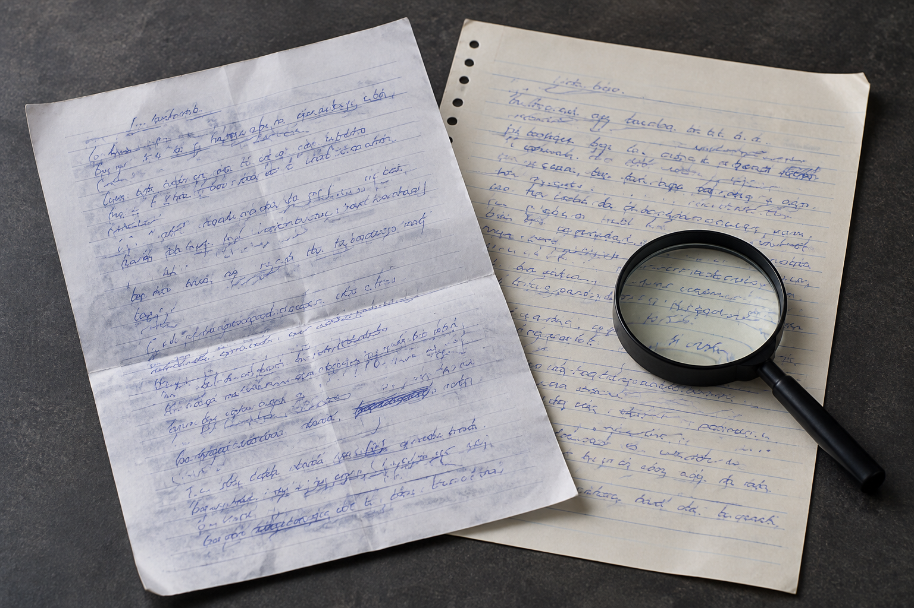

南京笔迹鉴定看见的“粗笔画”，也可能来自复印
复印后的墨线显得更粗，细小空隙甚至连成一片。遇到这种情况，先核对材料版本，比马上解释用笔轻重更稳妥。

复印会改变线条外观
南京笔迹鉴定材料里，复印件与原件照片有时同时存在。复印浓度较高时，原本分开的细线可能粘连，淡墨则可能消失。同一处笔画在两个版本里外观不同，首先要核对是否来自同一页、经过几次复制，不能直接把差别归到书写动作上。
先看哪些特征仍然可见
页面布局和字的相对位置有时仍较清楚，笔锋及细小转折却可能失真。模仿笔迹参考使用复制材料时，应说明当前能看清什么、看不清什么。把不清楚的边缘反复锐化，通常只会让处理痕迹更明显，并不会重新获得原稿细节。
签名中的连接尤其容易粘连
模仿签名、模仿签字的样本往往字数少，局部连线又密集。仅凭一张浓黑复印图，可能难以看清某处是连续线还是重叠线。可以寻找对应原件照片作为补充，同时保留复印件整页，避免局部图片与文件版本脱节。
交付时附上版本说明
把原件照片、首次扫描、复印扫描分别标注；无法核实复制次数时就写明未知。文件来源的说明不需要复杂，能让接收方辨认版本即可。资料越透明，后续判断图像是否适合继续比较就越高效。